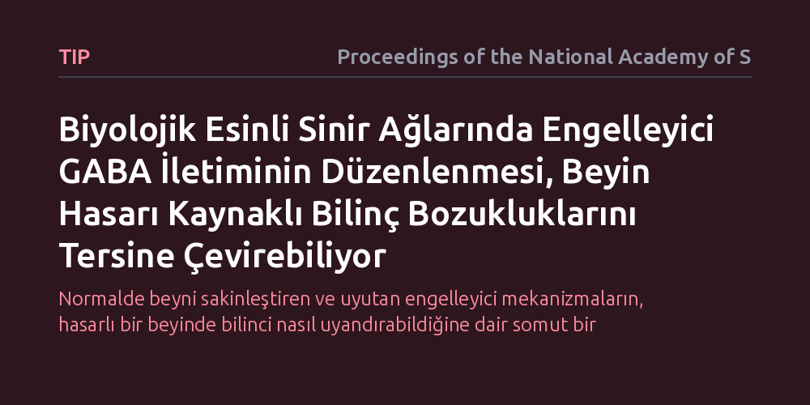

TIP · Proceedings of the National Academy of Sciences · 2026-10-07
Araştırmacılar, beyin hasarına bağlı bilinç bozukluklarının uyku ilaçlarında hedeflenen GABA mekanizmasıyla nasıl düzelebileceğini biyolojik esinli bir sinir ağı modelinde inceledi. Simülasyonlar, engelleyici sinirsel iletimin ayarlanmasının hasarlı ağdaki elektriksel dengeyi kurarak bilinç durumunu toparlayabildiğini gösterdi.
Normalde beyni sakinleştiren ve uyutan engelleyici mekanizmaların, hasarlı bir beyinde bilinci nasıl uyandırabildiğine dair somut bir hesaplamalı açıklama sunuyor.

Ciddi kafa travmaları, inme ya da oksijensiz kalma gibi ağır beyin hasarları sonrasında hastalar koma, tepkisiz uyanıklık veya asgari bilinç durumu gibi tablolara sürüklenebilir. Bu klinik tablolarda beynin geniş ağları arasındaki iletişim kopar ve kişi çevreyle ya da kendi farkındalığıyla anlamlı bir bağ kuramaz. Tıpta uzun yıllardır gözlenen ancak tam anlaşılamayan çarpıcı bir durum vardır: Zolpidem gibi normalde sakinleştirici ve uyku getirici olarak kullanılan GABA artırıcı ilaçlar, bu hastaların küçük bir kısmında paradoksal olarak tam tersi bir etki yaratarak bilincin ve sözel iletişimin geçici olarak geri dönmesini sağlayabilmektedir.
Normal koşullarda beyni yavaşlatması beklenen bir engelleme mekanizmasının, hasar görmüş bir beyinde sistemi nasıl uyandırabildiği sorusu nörobilimin temel bilmecelerindendir. Bu mekanizmanın çözülmesi, yalnızca bilincin nöral temellerini aydınlatmakla kalmayıp, bilinci kapalı hastaların tedavisinde hedefe yönelik müdahalelerin önünü açma potansiyeli taşıdığı için kritik bir öneme sahiptir.
Araştırmacılar bu soruyu yanıtlamak için insan ya da hayvan denekler yerine, biyolojik ilkeleri taklit eden hesaplamalı bir sinir ağı mimarisi geliştirdi. Model, biyolojik sinir hücreleri gibi elektriksel voltaj patlamaları (aksiyon potansiyelleri) üreten uyarıcı ve engelleyici nöron topluluklarından inşa edildi. Bu yaklaşım, korteksteki hücrelerin birbirleriyle kurduğu karmaşık sinaptik bağları ve ağ dinamiklerini bilgisayar ortamında ayrıntılı şekilde canlandırmaya olanak tanıdı.
Model kurulduktan sonra araştırmacılar, gerçek hayattaki beyin hasarlarını simüle etmek amacıyla ağın belirli bölgelerindeki nöronları ve bağlantıları devre dışı bırakarak kontrollü hasarlar (lezyonlar) oluşturdu. Ardından, GABA reseptörlerinin iletim gücünü değiştiren modülasyonlar sisteme uygulanarak, farklı hasar derecelerinde ağın yeniden organize olma kapasitesi ve elektriksel yanıtları adım adım hesaplandı.
Simülasyon sonuçları, beyin hasarının ilk etapta uyarılma ve engellenme arasındaki hassas dengeyi bozduğunu gösterdi. Bu denge çöktüğünde, bilincin nöral temeli kabul edilen sürekli ve organize elektriksel örüntüler sürdürülemez hale gelmekte ve ağ bilgi işleyemez duruma düşmektedir.
Modele engelleyici GABA modülasyonu uygulandığında ise dikkat çekici bir toparlanma süreci gözlendi. Engelleyici etkinliğin artırılması, hasarlı ağda oluşan kontrolsüz elektriksel arka plan gürültüsünü bastırdı. Gürültünün bastırılması sayesinde sağlıklı kalan nöron toplulukları birbiriyle yeniden eşzamanlı çalışmaya başladı ve ağ, dış girdilere anlamlı yanıtlar üretebilen kararlı dinamik durumuna geri döndü.
Bu çalışma, engelleyici devrelerin beyni yalnızca susturan bir fren sistemi olmadığını, aksine hasarlı yapılarda sinyal-gürültü oranını düzelterek bilincin yeniden organize olmasını sağlayan kritik bir denge unsuru olduğunu ortaya koymaktadır. Klinikte bazı koma hastalarında uyku ilaçlarıyla görülen geçici uyanışların, ağ düzeyindeki dinamik bir dengeleme mekanizmasına dayandığı biyofiziksel temellerle gösterilmiştir.
Bununla birlikte, elde edilen hesaplamalı çerçevenin her hasta için hemen uygulanabilecek standart bir ilaç tedavisi reçetesi sunduğu düşünülmemelidir. Çalışmanın sunduğu asıl kazanım, hangi hastaların GABA temelli farmakolojik müdahalelere yanıt verebileceğini önceden tahmin edebilecek mekanik bir yol haritası sağlamasıdır.